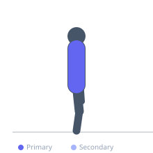
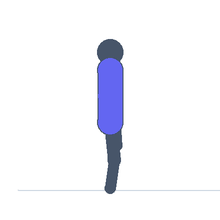

Exercise guide / Prone Neck Extension
Prone Neck Extension
The prone neck extension is performed lying face-down on a bench with the head extending off the edge, using a plate on the back of the head to resist cervical extension. It targets the posterior neck musculature — the cervical erectors and upper trapezius fibers — building strength in the often-neglected extension pattern. Combined with the neck curl, it provides balanced cervical musculature development essential for spine stability and contact-sport performance.
Primary muscles
trapezius upper
erector spinae
Secondary muscles
Equipment
Weight Plates
Optional
Flat Bench


Starting position
- Lie face-down (prone) on a flat bench with the head extending off one end. Hold a weight plate against the back of the head with both hands. Begin with the head flexed forward.
Setup
- Begin with no weight (bodyweight only). Progress load conservatively over multiple weeks of training before adding any resistance.
Steps
- Step 1: Lie prone with the head extending off the bench, plate held to the back of the head.
- Step 2: Begin from the flexed position (head angled toward the floor).
- Step 3: Extend the head upward and backward into full cervical extension.
- Step 4: Hold briefly at the top.
- Step 5: Lower slowly back to the starting flexed position.
Coaching cues
- Slow and controlled always
- Don't force the range — work to comfortable extension
- Match this volume with neck curl work for balance
Breathing
- Exhale on the extension, inhale on the descent.
Range of motion
- From cervical flexion (head down) to comfortable cervical extension (head up and back).
Tempo
- 2-1-3-0
Common mistakes
- Using excessive range of motion — extend to a comfortable position, not maximum
- Adding weight too quickly
- Performing with any cervical pathology or acute pain
Safety
- Contraindicated with any disc issues, cervical stenosis, or acute neck pain
- Progress extremely conservatively
- Always use controlled motion — never jerk or bounce
Training
- strength: 10–20 reps
- strength: 2–3 sets
- Rest: {'strength': 90}